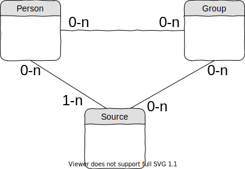

Data model

Read :
-
1 source is related to 0 or more persons
0 => a source can exist without being related to any person. -
1 person is related to 1 or more sources
1 => a person cannot exist in the database without being related to a source.
-
Information sources, origin of the data manipulated by g5.
The link between Source and Source permits to handle the notion of parent source.
For example, the source calleda1refers to the html web page cura.free.fr/gauq/902gdA1y.htmla1has a parent source calledcura5, which refers to version 5 of database located on web site cura.free.fr.
One source can have several parents. - Famous people who are studied.
-
A set of persons
The link between Group and Group permits to handle the notion of sub-group.
One group can be sub-group of several groups. -
Activity of a person, ~profession
The link between Occupation and Occupation permits to classify occupations.
For example, a poet is also an artist.
Syntax
The structure of the entities are described in yaml files located with the source code of the model
src/model/
├── Group.php
├── Group.yml
├── Person.php
├── Person.yml
├── Source.php
└── Source.yml
For example, file Person.yml contains an empty person with all its fields empty.
This provides to the code a precise definition of the entities, used as the description of a new type.
Identifiers
Unique identifiers depend on the entity type. Some entities (Person and Group) have several unique ids.Slugs
All entities have one unique id: its slug.A slug is a string that can be used in a URL.
It contains only lower case letters without accents [a-z], digits [0-9], and hyphen (-).
Examples
| Entity type | Slug example |
|---|---|
| Person | poincare-henri-1854-04-29 |
| Group | muller5-1083-medics |
| Source | lerrcp |
| Occupation | artist |
Person ids
Every person of the database has at least 2 unique ids:-
Id generated by the databaseUsual integer. These are used to associate person to groups.
-
Person slugPerson slugs are built by program, from family name, given name and birth day.
Example :poincare-henri-1854-04-29.
-
Gauquelin id
-
Müller id
-
Ertel id
-
Wikidata id
Group and source slug are defined by humans, in the code for groups and or in files of
data/model/source for sources.
Implementation details
The database uses postgresql.Structured fields are stored using jsonb type.
Each entity has a field
id, used as primary key.
Slugs are also indexed.
Links between Person and Group are expressed by a relation table. The other links (Source-Person, Source-Source...) are contained in the json values.
SQL to create the tables are located in
src/model/db-create-tables
G5 integration
These commands create the whole database from scratch.The code of class
g5\db\init\all is the only reliable reference documenting the complete build process.
# Generate tmp files from raw files php run-g5.php db init all tmp
# Fill the content of tmp files in database php run-g5.php db init all db
# Compute occupations and db statistics php run-g5.php db init all finalize
# Generate csv files to download php run-g5.php db init all export